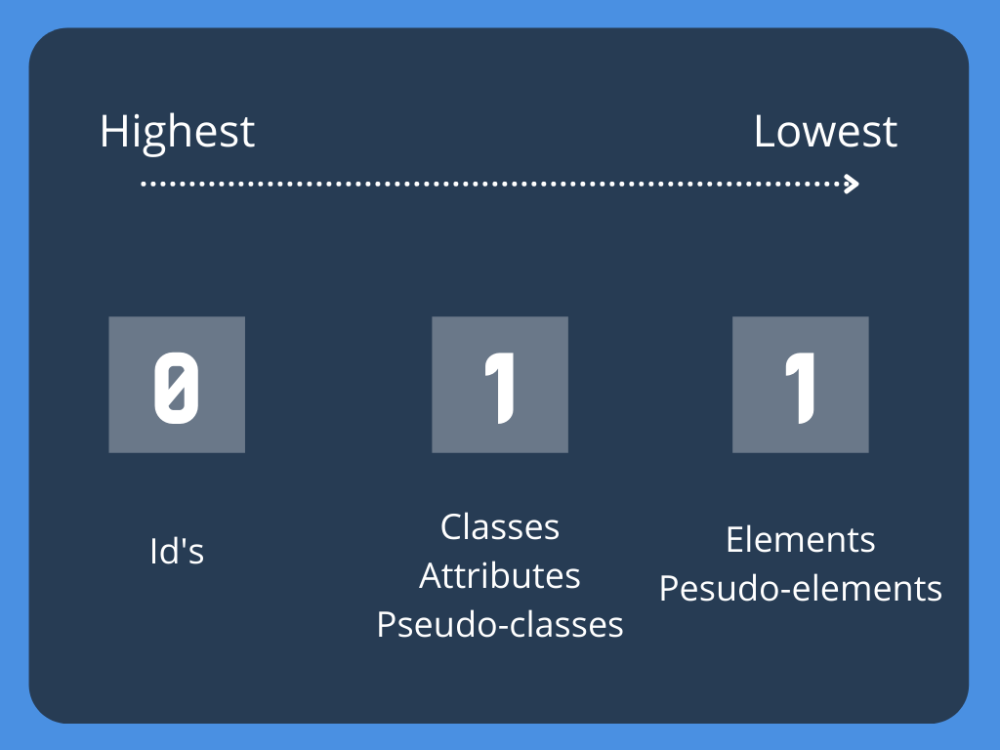
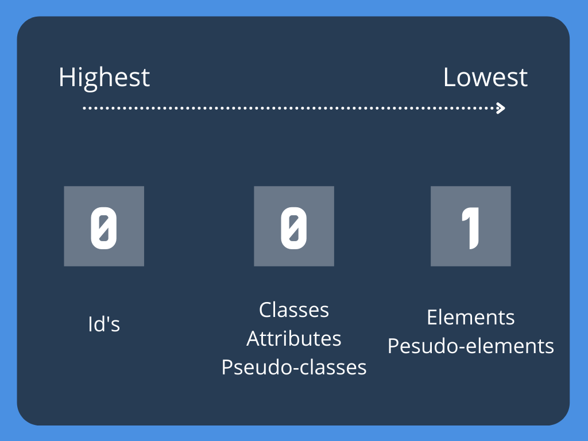
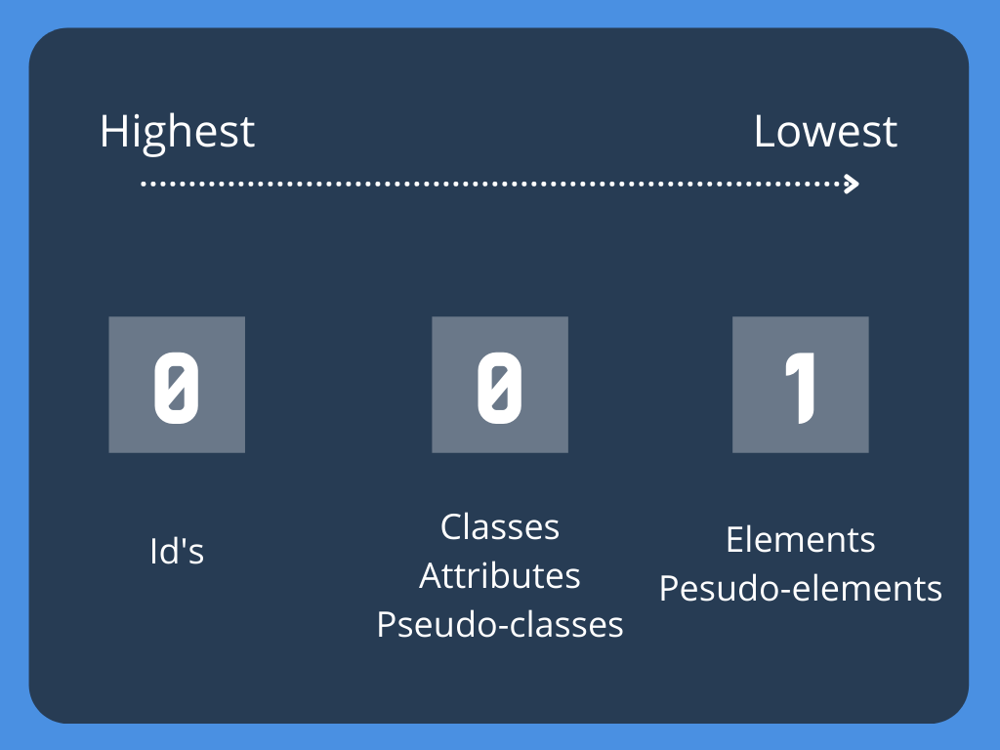

Welcome to
Introduction to CSS
ReDI School Munich - Spring 2021
But first...
Let us recap!
- HTML, tags and elements
- A tad of CSS
- The homework!
What is CSS?
Cascade Style Sheet
What do we use it for?
- We use CSS to style a document and define how it should be visually presented to the user
- Change the color of a text, make something move, push an element to the side and more!
How do we use it?
There are three different ways of using css in our websites...
Inline
Internal
External
Inline CSS

Internal CSS

External CSS

CSS Syntax
I want the main heading to be red and somewhat big...

Selectors
They are the ones that let us find or SELECT the element that we want to style
Basic Selectors
Attribute Selectors

Pseudo-classes Selectors

Pseudo-elements Selectors


Combinators

Let's practice!
Specficity
- Is how the browser decides which property values are the MOST important for an element
- If two or more rules are competing the browser needs to select a winner!

If two rules are the same, the last one wins!

When they are not exactly the same there is some brain gymnastics involved
When they are not exactly the same there is some brain gymnastics involved
When they are not exactly the same there is some brain gymnastics involved




When they are not exactly the same there is some brain gymnastics involved


 

What is the cascade?

There are 4 main levels in the CSS Cascade
- Importance!!
- Origin
- Specificity
- Position
Importance
When is best to process it and manual overrides
- Transitions
- !important (not recommended)
- Animation
- Normal properties
Origin
Where does the rule come from?
- Website (our styles)
- User
- Browser (default)
Specificity
Who won the race?
- Inline
- ID
- Classes, attributes, pseudo-class
- Element, pseudo-element
Position
Where in the code is located?
Last one wins!!
Homework
Part I - Properties
- Create a Button that looks like the image
- You can use any color combination for the text and background
Part II - Selectors
- Use the provided html and add a style sheet to it
- Set the background of all the spans to PINK
- Make the special text RED
- Make the last paragraph element have font-size: 50px and grey
- Make the second element of the list BLUE
- Make the links that go to google ORANGE
- Make the second link PURPLE
- Set the hover state for all the links to GREEN